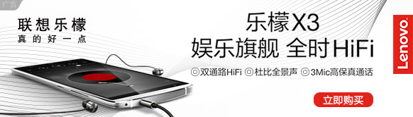
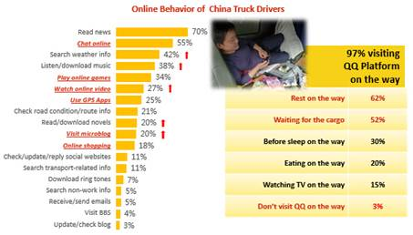

Move With Selina 智云众营销法宝支招Nike Free RN
随着数字技术的高速发展，跨屏程序化数字营销已不再是什么新鲜的概念。作为数字营销领域的标杆企业，Nike一直在探索着跨屏程序化投放的各种可能。同时，紧抓市场变化，从跨屏到内容，从数据到模型等各个方面发力。
此次Campaign已是Nike与智云众在数字营销领域的第四次合作，这正是基于双方在跨屏营销，多维数据管理等多个方面的共识。双方再次联手，共战程序化营销领域。
一、从整合到扩充 有打通才有跨屏
多次完美的协作，造就了信任，而信任也让双方在数据上的进一步合作变得顺理成章。此次Nike与智云众的合作，同时利用了来自销售一线的真人CRM时效数据，及智盒强账号打通系统，真正做到了真人跨屏大数据营销。
通过导入先期沉淀的Nike CRM数据，及对在线购物车数据的整理，智云众Smart DMP系统对比系统内快消人群样本、自动匹配，还原“真人”，并组成多套TA投放数据包，进行Lookalike扩充。结合打通强账号体系，完成基于“真人”的跨屏投放：
先期，智盒系统定义网络访问者移动设备指纹，及在对Nike Free RN目标用户行为的分析基础上，形成跨屏投放中唯一识别的用户ID粗形态样本库，后期与智盒自身多年累积的强账号系统进行比较、匹配再校正，完成对跨屏用户的追踪。
智盒采取了多维排重的计算方法分析唯一身份访问者，其中包括对访问者移动设备号的时间、来源及内容页面维度等三方面的排重计算，最终完成对访问者跨屏精准投放。
值得注意的是，后期的强账号匹配校正，不仅包括Smart DMP的计算模型，还得益于先期智盒所对接的腾讯社交广告KA服务商数据合作计划，双方系统在Nike项目执行中完成在服务器端对访问者账号的交叉验证识别。
简单地说，跨屏投放的种子用户数据库来源于第一方数据，智云众通过归并还原成可利用于精准投放的大数据，随后进行朋友链相似人群扩充。结合跨屏技术，完成多维触达目标用户。
二、动态投放调整 要效果也要体验
智盒投放系统中的Coverage模块事实上是一个动态模型系数，我们对于动态的理解是：程序化购买将不仅仅出现在TA购买自动出价，同时系统通过对于一天各个时间段的投放数据洞察，自动修正：KPI完成率好的时间段，系统将投放的更多，在一天各个时间段产生马太效应。
此外，在移动端，我们不仅通过传统的原生信息流形式让广告展示不显得突兀，更从保护NIKE品牌美誉角度，不过多打扰用户。我们在众多渠道的曝光素材中，为用户设置“不感兴趣”的可选项，一旦点击，将不产生后续曝光。
三、渠道配比自动优化
智盒帮助Nike Free RN用好每一份投放预算！除了在优质平台采买TA，Smart Box的优化模型还动态配比多种渠道资源。在项目执行中期，Smart Box智能投放系统不仅阶段交叉校正数据库，更是阶段复盘补充多种优质TA采买渠道。例如分析流量消耗占比，甄别新购买用户来源渠道，高效转化触达平台，重新智能配比投放渠道。不仅优化了投放成本，同时从更多维度触达目标人群。动态模型的逻辑是：好的KPI完成平台理应得到更多程序化购买的机会。
此外，根据媒体属性，项目初期设定的人群数据包将智能匹配不同的投放渠道。智云众发现，不同平台维度可以触达到相似的同类人群，但是不同的投放渠道，也将会有各自的人群侧重，使用不同的投放数据包，将有效提高人群转化。
在为期两周左右的Campaign期间，项目组共完成超过3.3亿次的曝光，有效支持了NIKE FREE TR FLYKNIT“轻盈灵动，自然贴合”的内容营销主题。智云众认为，好的内容属性搭载领先的数字营销投放技巧，才能为广告主赢得更深的市场认知，而系统的智能化也将提升广告投放的效率。
在整个活动中，通过智云众的技术搭建，用户与Selina任家萱形成了有效互动，特别是在Selina宣布正式加入到Nike 2016运动之旅的时刻，与她一同感受到了运动带来的乐趣与正能量。
最终，智云众为Nike带来了超过原计划120%的ROI官网购买转化，这也正是诠释着我们的理念——数字营销不应仅仅是一个概念，能产生实际订单的Campaign才是真正的数字营销。
智云众优化数据模型 助宝马双系攻坚新目标用户
今年以来，中国汽车市场普遍疲软，在大环境不利的情况下，作为豪华车领域的标杆企业，宝马中国一直在探索着营销方式的新突破。近期，今春上市的宝马2系Active Tourer运动旅行车及新宝马3系分别在9月至11月迎来两波Campaign，协同宝马中国的移动DSP技术合作方——智云众，借助优化数据模型，一同攻坚新目标用户，直面车市萎靡大环境。
一、联合营销 画像各有侧重
作为国内大数据营销的领军企业，近年来在程序化营销领域，宝马中国正逐渐布局移动端，同时坚信基于移动用户需求、爱好、行为所产生的大数据洞察。而专注移动，相信算法、数据驱动的品牌传播亦是智云众所坚信的营销法则。
首波的新用户数据建模工作，不仅涉及宝马旗下2系Active Tourer运动旅行车及新宝马3系的联合营销，例如地域上覆盖宝马4S店所及的北上广深等40多个一线及省会城市，通过WIFI热点寻找，布局LBS营销；在年龄区间上，主要投放23~40岁间的中高收入商务男性。此外，在面对不同的消费群体上，人群画像亦各有侧重，例如宝马2系目标客群偏向充满活力、生活方式积极的年轻行动派。他们热爱生活，关爱家庭，关注环保，希望自己的座驾更具可持续性。而关注宝马3系的用户更看重丰富的驾驶动力体验，受教育程度较高，同时热爱运动，注重金融类理财。
通过智云众智盒投放平台甄选，结合广告主的投放偏好，智云众优选移动资源，结合数据库扩充迭代，对客户营销策略进行优化。另一方面，智云众团队注重投放频次节奏，在追求覆盖更多目标受众的同时，也尊重用户体验，如果曝光超过两次仍未产生点击，将不会针对同一用户再次重复投放，不过多打扰到客户。
二、优选社交数据 交叉迭代
此次两波不同车型的Campaign目标非常明确也极具挑战：剔除已有宝马的用户，开拓从未购买过宝马的新用户销售线索，进行品牌曝光。事实上，这其中有着两层含义：一是潜客拉新，特别是帮助此次新上市的2系旅行车，迅速在市场上进行有效传播，并在较短时间内使目标人群（未购买过宝马的新用户）获悉新车上市的消息及新车技术信息。二是借助新用户的社交朋友链做再传播，通过精准投放的方式，助力宝马3系在竞争激烈的豪华运动型汽车市场得到有效的品牌美誉度提升。
不过，这一New Audience Buying的目标也将意味着除了标签定向的投放外，配合投放的Smart DMP平台的BMW用户数据将进行重新扩充。
这项数据扩充工作的逻辑是，通过朋友链交叉法则扩充更多目标新用户。用于朋友链交叉扩充的数据库来源有两个，一是优选首波转化较高的种子用户群。另一方面，通过Smart DMP社交行为模型获得（通过模型，多维观察受众看到广告后的停留时间，H5页面的浏览页数，进行深度洞察、比较）。包括第一阶段及以后的每波投放，投放目标都进行了多轮数据反馈迭代，形成分阶段的样本人群数据库，随后进行比较筛选、交叉扩充，得到精准的拉新数据库配合中后阶段的投放。通过这样的方式，此次两波Campaign的数据库获得了大量鲜活的潜力新用户，并成为最终Campaign成功完成的关键！
三、品效合一 内容营销是王道
此次Campaign，智云众品牌团队不仅要完成注册引流试驾等KPI指标，也将同时需要协助广告主进行品牌曝光提升美誉度。在与宝马中国多次反复沟通后，一同深度布局内容营销。
智云众深知，同期，部分目标投放用户的购买意向在不同竞争品牌间存在游离，特别是在奔驰与奥迪之间。如何在短短的沟通瞬间，做到“润物细无声”智云众品牌团队对2系、3系两大车型的落地页分别进行了界面素材的优化，特别是在3系的H5素材页面中配合宝马中国融入了科技感十足的内容，及对驾驶者来说实用性极强的驾驶圣经，同时与异常注重驾驶体验的目标用户一同分享了包括DTM赛车手Marco Wittmann在内的四位优秀驾者对驾驶体验的理解。这些诚意满满的信息分享，亦是体现出了广告主与智云众所深谙的内容营销之道。
在最终的投放效果上，智云众与宝马中国一同创造了千万级的曝光，引流从未购买过宝马的新用户带来34.2万个有效点击，并在落地H5中与广告主进行了趣味十足的品牌互动。
实战解析 | 数据通路开启“联想”营销新模式

市场研究机构Strategy Analytics最新发布的中国智能手机全年报告显示，2015年中国智能手机市场出货量同比增长仅3%。显然，手机行业增速已明显放缓，正逐步进入整肃期。本土厂商若不能在营销方式和商业模式思考上有所突破，将势必被行业淘汰。
在2015年11月期间，国内手机巨头联想发布了最新款旗舰手机——乐檬X3，积极挑战竞争日益激烈的国内手机市场。配合先期发布的首款旗舰机K3，联想乐檬系列在11月至12月期间，进行了新一轮的基于平台数据打通、阶段数据调优的投放。凭借对于全路径数据的洞察，智云众助力此次Campaign完成PC+移动的全网跨屏跨渠道营销，这亦是印证了智盒系统在多屏多平台下对唯一UID追溯整合的能力，并已具备打通整合优质资源的能力。
智云众案例：旗舰乐檬系列营销推广案例
品牌：联想
产品：乐檬K3及乐檬系列新品X3手机
类别：产品营销
时间： 2015年11月-12月
背景：作为联想手机先期发布的上一代旗舰产品，乐檬K3已积累下了良好的市场口碑。而最新面世的乐檬X3凭借Hi-Fi级的使用体验，标志着联想手机逐步转向高端市场。面对行业激烈的竞争环境，旗舰级的新品预热上市、乐檬系列的品牌再营销将成为极富挑战的事件。
诉求：乐檬K3希望通过此次投放进一步夯实已有市场，而旗舰新品X3更希望通过此次Campaign打开全新的高端市场。
策略：通过先期的沟通，智云众为联想此次投放制订了三大数据营销策略：
1、联想IMEI号打通腾讯社交大数据，精准洞察聚类人群营销；
2、藉由账号体系打通，完成全网跨屏营销；
3、阶段性数据调优，实时投放策略优化。
执行：
策略一：IMEI打通腾讯社交数据，直指精准聚类营销
凭借多年的技术布局，联想手机建立起了属于自己的IMEI数据库。经由唯一的移动设备识别号，完成多维用户行为洞察。此举亦成为后期营销活动中实现精准营销的法宝。在此次投放初期，通过智云众技术后台搭桥，IMEI成功打通腾讯社交数据。
首先，通过机主微信、QQ等众多账号体系，对种子用户唯一UID真实属性进行还原。随后，藉由后台系统捕捉到的由其朋友链拓展片化后的TA群，同期洞察用户群具体行为周期、活跃平台等多维人群画像。广告主再向与机主兴趣取向类似的受众进行投放展示，对行为偏好接近的聚类人群进行技术挖掘。
所以，基于这一朋友链拓展的社交营销的起点即是精准的，营销也变得更有效率，而不仅仅局限于立项初期的兴趣人群猜想。同时通过对用户群使用平台的行为习惯，寻找到最佳投放时机。用最小的成本，更高的投放效率，获取广告的最大投放效果。
策略二：账号打通，全网跨屏营销
作为中国最为专注的移动DSP，智云众在此次投放中仍将紧跟移动用户使用场景的切换而适时匹配推送平台及相关素材。同时，依托智盒平台对全路径数据的洞察，完成全网跨屏跨渠道营销。
另一方面，在手机端IMEI识别号打通移动社交账号的同时，利用同一社交账号打通移动与PC。事实上，Google、Facebook、Twitter等互联网巨头，早已开始采用这种SSO方法进行跨屏用户追踪。即通过识别账号，来锁定多个平台下唯一UID用户属性。此举，已为众多具有前瞻性的数字营销人员提供更完善的消费者跨屏访问数据，有效筛选目标受众。
通过对于目标人群的深刻理解，智云众向目标人群推介PC和移动端的最优媒介组合，为用户提供结合例如banner、信息流、PC插屏等不同变化的形式来持续吸引目标人群的关注度和互动。
策略三：数据调优，多维对比，实时的投放策略优化
在本轮投放中，项目组将整个投放周期分成了6个阶段，每阶段末期进行数据分析，优化后期投放效果：
11.01—11.18 两个产品四套Lookalike Audiences数据分组上线，通过分布式流计算模型，统计分析用户广告点击率，调整相关度低的投放，提升每套素材的每一个渠道转化率、优化各项投放费用等相关指标；
11.19—12.02 阶段数据交叉对比。另增加重新评估过的电子产品兴趣等标签；
12.03—12.11 基于用户平台行为数据分析，进行更合理的跨屏流量资源再分配。暂停部分转化较低的渠道，更多费用预算开始倾向信息流资源；
12.12—12.17 阶段数据包更新，同时根据模型反馈，降低例如微信、部分PC端的出价；
12.18—12.23 轮播优化投放素材创意，对部分移动渠道的人群购买智能出价策略调整；
12.24—12.30 补充更新部分IMEI识别号数据，对地区、性别、年龄、兴趣、行为等多个维度标签模型进行更新，优化PC端费用占比。
项目成果：
在本次投放结束后，根据多方数据显示，项目独立点击用户数超过数十万人。此次投放也同期推动了联想新品关注者的延伸探索，通过例如激发用户分享的社交广告、搜索阅读等行为，完成了新品信息的再传播。而此次基于智云众社交大数据和账号搭建技术的程序化营销，不仅夯实了已有乐檬X3用户的品牌忠诚度，更是直接提高了K3新品兴趣及购买转化，全面超出既定的先期目标。
一路护航，直抵心中目的地
壳牌智云众合力演绎劲霸激“擎”
近期，智云众助推壳牌劲霸完成新一轮的Campaign投放。凭借全网双重数据包+多渠道移动人群购买，智云众为广告主提供了基于深度洞察的精准营销，一并提升了新发布劲霸发动机机油的市场关注度。与此同时，通过优化H5展现方式，为目标用户传递了充满温馨暖意的关怀，定制化的传播提升了品牌粘性。在品牌传播的最终效果上，全面超出预期。
品牌： 壳牌
产品： 劲霸发动机机油
类别：产品营销+新品推广
时间：2015年9月-12月
背景：作为全球最大的润滑油供应商，壳牌为各大汽车品牌厂商提供了超过70年的不断创新的服务。特别是今年最新推出的劲霸发动机机油，直指大型运输车辆、独立卡车车主目标用户群，为其严酷的驾驶环境保驾护航。很显然，作为目标用户的卡车司机工作轨迹具有非常大的跨区域性。同时他们长期四处奔波，远离家庭，亟需关怀。
诉求：除了加强在移动端的品牌传播，加大新产品的曝光外，壳牌亦希望通过充满人文关怀的营销活动，提高用户粘性。另一方面，壳牌深知，DT营销时代，先期的投放数据管理将是Campaign的切入点，也是最终优胜的关键。而更多的优质渠道投放与移动人群购买，将会实现更精准的多点触达。
策略：通过来自三方的研究数据我们不难发现，卡车司机的工作区域跨度大，同时他们在手机上花费大量的时间来打发乏味的长途旅程。我们的数据还显示，在Campaign开启的先期，超过72%的卡车司机会在卡车停泊时使用手机，同时移动端的可触达率高达99%，远超67%的普通中国网民移动端触达率。毫无疑问，移动端的投放将是必然的选择。
结合壳牌的诉求及移动端广告投放的现状，智云众为此次投放制定了三大策略：
1、 多维分析目标用户的移动上网行为，其中包括上网方式、跨区域定向、在线高峰段动态识别等多方面。基于对卡车司机的深度洞察，制定投放策略，实时更新数据研究，阶段复盘调整。对于不同的投放渠道与投放方式，三方共同拟定了两套数据包，以期达到多维多点触达；
2、 深度布局卡车司机重度使用的腾讯新闻客户端、微信公众号及QQ空间信息流等移动端优质媒体资源，对目标人群最经常使用的Hero Apps进行程序化人群追踪和购买；
3、 尊重用户最佳体验，发力移动原生营销，实时跟进用户投放后的行为数据，不过度打扰用户。通过极具关怀性的交互方式，确保用户深度参与，提升广告接受度和用户参与度，进而促进品牌粘度。
执行

1、Smart DMP数据显示，97%的卡车司机会在停泊间歇，使用QQ平台内的各款产品，并且阅读新闻、移动社交、了解天气及收听音乐等习惯成为卡车司机前四大高频移动端行为。
另一方面，我们通过三方研究发现，QQ社交平台对于卡车司机的触达不仅仅限于旅途中（每天登陆时间长度达69分钟），同时当用户在家休息时，其使用时间甚至双倍增加至138分钟。在两个日常使用场景下，都存在高度使用粘性。
值得注意的是，41%的目标用户非常喜欢阅读微信公众号文章，这其中更偏好关注卡车维保、天气预报及交通路况类公众号，这也成为Campaign期间，整个投放的重点布局渠道。
基于以上的用户数据洞察，智云众移动品牌营销团队在整个投放期间，重点布局腾讯新闻客户端、微信相关公众号平台及深耕移动社交多年的QQ空间原生信息流。
此外，近期，智云众已首家程序化对接腾讯新闻客户端，同时凭借与腾讯广点通良好的合作关系，大大提升了此次Campaign中的平台技术对接效率，并得到数据上的有力支持。
同时，根据投放的渠道方式不同，项目团队使用两套数据包进行投放，以期达到多维多点触达。针对最经常使用的包括墨迹天气在内的多个Hero Apps，使用另一套数据包进行程序化人群购买，并进行分时分段的差异化投放。例如，在12:00-14:00间着重在途司机的投放，在20:00-22:00间，着重休憩司机的投放。
2、卡车司机奔波劳累，工作区域跨度、强度都非常大，他们长期四处奔波，远离家庭，亟需关怀。项目组亦想通过此次Campaign的机会，传递对于他们由衷的敬意。希望通过充满关怀的问候，与卡车司机们进行深度的交心互动。而这亦是壳牌与智云众品牌营销团队所深谙的营销之道——尊重用户最佳体验。此外，根据实时跟进的三方用户投放行为数据，优化投放节奏，不过度打扰到用户。当受众的接受度和参与度提高之时，品牌粘度亦会达到新的高度。
成果
项目结案数据显示，在此次投放周期中独立点击用户数达50万人，产品新增关注者超过20万人。此外，吸引了超过32%的点击用户在腾讯社交平台分享了相关品牌内容，成为壳牌新品的关注者。超过3500万的有效曝光量无疑更直接高效地提升了壳牌劲霸的关注者人数。
寄语
智云众OptAim高级营销副总裁江坚炜（Michael Jiang）：“近年来，随着汽车行业大数据体系的构建、原生广告用户体验的逐渐提高及移动广告投放技术的进步，汽车行业程序化营销已成为行业趋势。我们的服务名单中不仅包括宝马中国、北京现代等汽车品牌，更已延伸至易车网、壳牌等汽车周边产品领域。智云众汽车营销产业链正逐步形成。未来，我们将继续坚持用户体验至上的移动营销理念，通过挖掘连接可实现数据，通过读懂可实现数据来做好营销。并结合优质资源与先进的人群购买技术，为汽车类品牌广告主提供更加专业完善的大数据营销解决方案。”
智云众移动社交营销 助力北京现代逆袭微增车市
随着汽车保有量的持续增高，车市增速放缓已然成为不争的事实。2015年中期，中国汽车工业协会已将全年销量增速7%的预测下调至3%。在经历了长达十几年的高速增长之后，“下滑、降价、限购”或将成为汽车市场的“新常态”，微增时代已经来临。

与此同时，智盒Smart DMP大数据管理平台在15年Q3发布的SUV行业报告中显示，虽然今年8月依旧是公认的车市淡季，但SUV网络关注数却较7月上升25.57%，特别是在城市型SUV（价格在16-30万）同比增长较大，达40.82%，位居同类SUV关注数之首。Smart DMP基于用户搜索、浏览、社交分享等行为轨迹所显示的需求旺盛与销量低谷的表象形成强烈对比，此时若加大营销力度，将势必助推品牌在微增时代完成9月“逆袭”。
智云众移动营销三招致胜，实现北京现代精准高效营销目标
1、微增时代 汽车营销拥抱移动程序化
关注度意味着机会，但并不意味着实际的购买。很显然，变现关注度并不是传统广告所能做到的，引流效果更不可考量。同时，当利润空间缩小，销售压力增大，车企对每一分广告费也会更加精打细算，有精准定向的、可用数据考量的程序化广告方式正逐步受到重视。
同时，营销对象的场景变化，也给了移动端程序化广告更多的机会。作为城市SUV的主力购买人群，商务人士的时间是异常碎片化的，抓住每一次碎片化的营销机会，优化每一个沟通瞬间变得异常重要，移动程序化投放成为了必然的解决方案。
事实上，运用大数据、优化定向模型锁定目标客户的新型移动程序化营销解决方案不仅可以起到更好的宣传效果，更在帮助着汽车广告主们梳理着更核心的问题：我的车是卖给谁的？
2、多重定向 智云众助力新途胜移动营销新玩法
今年9月，北京现代适时推出2015款新途胜，继续发力城市SUV市场，发布节奏踏准城市SUV 40.82%的市场需求。
此次2015新途胜Campaign是北京现代在移动程序化领域的首次布局，智云众深耕移动营销领域多年，整合此次营销活动第一二方数据包，并通过自身特有模型优化页面降低跳出率，为官网有效引流销售线索。

是次营销活动，整个投放周期仅一个月，相对均值较短，这使得北京现代必须选择更有效的投放方式，例如侧重基于移动社交基因的精准投放。最终，北京现代选择在智盒程序化营销平台中重点布局移动社交营销，发挥智云众移动所长，例如包括对微信用户进行深度Audience Buying。在对多方销售及潜在购买人群的数据梳理分析后，智云众团队逐渐描绘出这样的目标人群画像：30至45岁，有孩子的家庭用户群，注重功能性；同时，在周末乐于举家近郊出行游玩的成熟事业型男性。此外，智云众汽车行业研究团队关注到一个非常有趣的用户定向逻辑，并将其纳入本案的种子用户数据库：类似于啤酒尿布的营销联想，在一二线城市中，关注改善型房屋置换的男性亦对售价20万左右的城市型SUV抱有浓厚的兴趣。在购车意向上，重视功能体验与性价比。
另一方面，由于此次投放含有内容性极强的视频展示，为了更好的交互体验，智云众在投放中更侧重CBD区域的WIFI联网方式定向。此外，系统还充分考虑城市地域定向，整理选取了46个一二线城市，深度定位这些地域中北京现代4S经销商3公里半径内的WIFI热点，进行基于LBS技术的定向投放。
此外，在移动社交数据的优化和使用方面，智云众为新途胜项目开启行为路径抓取模型，对在一些社交软件中高度关注 “途胜”、“新途胜”、“北京现代SUV”等信息的用户进行挖掘，并基于社交营销中，种子用户的朋友链关系做投放样本扩散。另外，智云众还根据自身线性数据库对包括投放时间在内的其他标签优化了目标用户购买。例如，我们的模型发现上午10:00的一小时内，种子用户会忙里偷闲地使用微信，同时在22点前后一小时内，种子用户会达到活跃高峰。这两个时间段，都成为了此次Campaign的重点投放时间段。
基于以上，系统初步锁定420万至480万区间的种子用户人群库（新鲜的移动目标用户数据库是变化的，同时用户的需求也是实时变化的）。并基于此，进行社交朋友链的传播投放。真正帮助广告主最高效地“找到用户”和“买到用户”。
3、追本溯源 精准造就高转化
营销的最终目的一定是服务于销售量的，但如何在千万种营销方式中找到真正的线索，一直是众多营销者长期思考的问题。
在此次为期三周的Campaign中，项目组共完成11,077,848次曝光，最终的平均点击转化率近1.8%，最高曾一度超过2%，而这一数据远远超过汽车品牌移动端投放的行业均值，同时超过PC端1%的均值。北京现代与智云众品牌营销团队深知，精准的定向才可以造就高转化，同时营销人员亦在整个投放过程中，逐渐明晰目标：我的车是卖给谁的？在碎片化时代下，究竟谁在看我的广告？
通过优化定向模型，根据实时数据更新来购买用户，精准触达目标消费者，可考量的移动端营销数据，并藉此支持后续的营销方案。这些显然不是传统广告投放方式可以做到的。未来，相信移动数字营销、基于大数据的精准定向等新技术将为更多的车企带来新的多样化的解决方案。
要量级也要精准 智云众助力索尼新旗舰手机推广超预期
双方合作背景
尽管国内的智能手机市场竞争日趋激烈，但作为老牌的智能手机品牌——索尼仍然拥有不少忠实拥趸。2015年一季度，索尼中国开始与智云众沟通移动端的广告投放方案，希望借助一些最领先的移动营销技术结合优质的移动流量，快速、高效且规模化地提升品牌传播表现，并将大量的目标消费者吸引到相应在线购买渠道。
随着6月索尼新一代机皇Xperia™ Z3+ Dual的面市，如何对这款拥有IP65/IP68级别防水、700nit亮度特丽魅彩屏幕、搭载2930mAh电池、拥有独家Ultra STAMINA省电技术超高续航能力的优秀手机产品进行高效推广成为了索尼中国是年的重中之重。
客户投放需求
目标人群需求：
●年龄20～45岁
●以男性用户为主
●白领及商务人士
●中高收入
●兴趣为水上运动、旅游、摄影等若干项之一
●北上广深等10多个城市用户为主
目标媒体需求：
●权威移动媒体：媒体自身有很好的品牌影响力，能够帮助提升索尼新品智能手机的品牌形象
●优质效果媒体：媒体能够带来大量优质有效的目标用户，使活动官网和在线销售渠道获得丰富的订单
整体目标：
●追求预算的合理使用、投放性价比、获得品效合一的均衡推广效果
实际投放解析
通过索尼的具体投放需求可以发现， 这是一个追求品牌曝光和销售转化双效合一的典型广告活动。广告主对于目标人群了解、定义清晰，但标签多且复杂，对于技术运营端是一大挑战，同时多标签人群采买亦是对于流量段的考验（某种程度上，多标签的精准亦让TA数变少）。智云众通过打通Smart DMP社交行为大数据系统与广告主第一方IMEI号数据，完美解决目标用户采买精准保量的难题。
另一方面，索尼希望布局优质移动资源，以期用最优性价比的投入，确保合适点位体现品牌美誉度。在综合考虑客户的预算、对人群特征、对品效等方面的各种需求，智云众优选最利于达成相应投放目标的媒体组合，即携程+微信公众号+QQ空间。通过PDB的方式，程序化采买携程中高端商务旅行人群，并结合腾讯社交矩阵中海量目标细分人群包，使此次移动推广活动在精准度与量级间达成绝佳平衡点。
基于Smart DMP对目标用户全路径上网行为的洞察，项目组拆分再分配不同的人群数据包、不同的投放时间段及移动资源渠道配比，在品牌曝光、用户行为回访端、及出价策略上各有不同情况下的侧重，引流购买渠道，产生真正的购买订单。此外，用户也将在后续行为中得到更多的手机配置建议及更丰富的产品信息。多样化的互动也提供了更好的购买体验，使得ROI以更温和的方式“落地”。
优选资源组合，做到1 + 2 > 3
此次新品Campaign，智云众品牌营销团队及Smart DMP大数据管理团队不仅客制化梳理第一方CRM目标用户数据库，更通过技术搭建，重新匹配携程移动端优质购买用户人群，投放数据库多阶段二次优化，精准锁定商务中高端收入人群。
另一方面，多套Campaign数据包亦在项目执行中，经由智云众智盒系统Probing技术交叉匹配腾讯手机关注用户数据库，搭载着种子用户朋友链，向无数周围的朋友传递着极具新鲜感的数码信息。并通过用户阅读习惯，转发点赞等行为逻辑挑选出高度特征匹配的微信公众号进行广告投放。
在整体40多天的投放中，携程腾讯双通道共曝光超过5800W人次，点击指标亦超过考核指标近17个百分点，同时为官网带来了大量的回访及用户沉淀。
智云众高级营销副总裁江坚炜先生表示：随着国内市场的进一步饱和，智能手机的营销压力日益增大，广告主将会更精打细算每一份投入，并更关注精准营销所带来的ROI，这将为国内程序化购买市场中的优秀企业带来更多的机遇。智云众作为国内最为专注的移动DSP营销专家，通过相似人群Probing优化算法，领先的多维画像等技术，结合优选资源矩阵，将为各广告主打造日益精进的数字营销解决方案。
一起来吹风！麦当劳小茉绿玩转“移动+原生”精准营销
日前，全球餐饮巨头麦当劳正式启动新一轮的社交营销活动：吹风小游戏，1元品尝新品小茉绿！智云众作为麦当劳本轮Campaign的营销合作伙伴，凭借自身出色的移动社交营销优化能力，助力此次营销活动全面超过预期效果。
作为全球领先的快餐品牌，麦当劳在中国内地市场迅猛扩张。为了拉近与顾客的距离，麦当劳跨越中国25个省市和直辖市，布局670家餐厅。强大的门店网络系统，为麦当劳积累了大量的线下用户数据，并开发出了一套非常成熟的CRM大数据体系。各门店能够有效地统计顾客的餐饮消费记录，并用于检验每一次Campaign的直接效果——有没有真实消费转化。显然，此次智云众所面对的此次Campaign是一场移动营销执行力大考。为了迎接这次大考，智云众在整个Campaign投放前期做了多方精心准备，并在投放过程中完美把控良好的执行进度及投放成本优化。
首先，智云众旗下Smart DMP大数据管理平台衔接梳理Campaign 目标TG群与用户实时LBS信息，结合麦当劳在八大核心城市CBD商圈门店CRM数据，帮助“吹风小茉绿”寻找到大量具有时效位置信息的种子用户，并且结合Lookalike Probing相似人群分析技术，拓展聚类人群，解决精准和规模化之间的平衡。
此次麦当劳吹风小茉绿投放，采用了移动原生信息流及互动性极强的用户参与形式。通过原生信息流，带给用户与所使用应用完全一致的体验，丝毫没有普通广告所带来的突兀违和感，而整条广告创意也十分符合麦当劳核心用户群体的年龄层次。
通过智盒后台的技术搭建，此次Campaign亦在落地信息流中完美嵌入互动性极强的趣味游戏：用户点击麦当劳吹风小茉绿H5页面下方的“查看详情”，将会跳转到游戏页面——用户可对手机的话筒位置吹气，只要吹气力量足够大，屏幕就会给出获得奖励提示，凡是成功完成游戏的用户，可凭借屏幕上的兑换码，到店以1元购买品尝麦当劳小茉绿新品。
麦当劳吹风小茉绿活动主要投放时间段，集中在十一国庆长假前夕，而这一时期正是主流社交平台流量资源争夺最为激烈的时期，由此将导致各大社交平台的投放成本大幅提高。凭借海量客户的运营经验及账户操作技巧，智云众运营团队巧妙运用最优广告创意，精准把握每日资源流量高峰低谷，使麦当劳小茉绿Campaign在客户所需的投放期间内成功落地，并有效控制CPC平均成本于行业均值之下。在确保用户获取规模的同时，实现投放成本有效控制。
在为期一周左右的小茉绿营销Campaign中，智盒系统共面向7,795,640个独立移动用户进行了投放，共获得6,994,560次曝光。并且，完成了近10%的活动转化。
智云众认为，移动端原生广告不仅限于“到TA为止”的广告传播，更是让TA在趣味交互过程中觉得“好玩”，通过朋友链向聚类好友主动传播，从而做到更大规模的用户品牌认同共鸣。凭借迅速完成从线上到线下的有效引流，智云众帮助广告主完美实现移动端到实体店的O2O转化